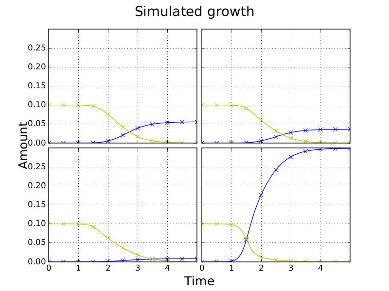
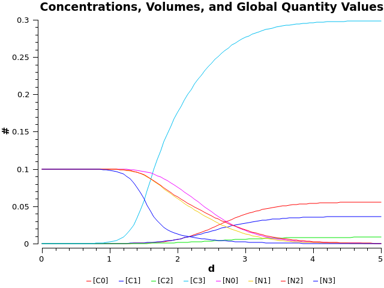
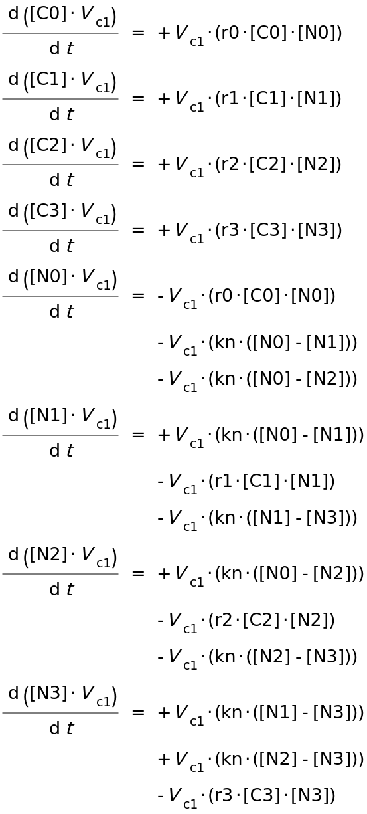
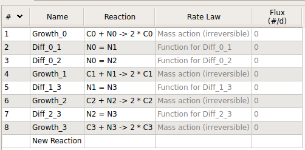

Writing models in SBML
Generating an SBML model in Python using libsbml
Using the libSBML Python API we are now able to generate SBML models for the competition model for any Plate size, given instances of CompModel and a Plate with parameter data. Here is an example of the xml generated for a simulated 2x2 plate with plots generated using both CANS (and SciPy's odeint solver (not from SBML)) and Copasi shown below.
Copasi generates the below ODEs from the reaction equations in the table. Diffusion reactions are irreversible with rate kn*(N[i] - N[j]) for culture numbers i < j.
With SBML we can now distribute versions of our model in a standard format and these can contain parameter estimates from fitting. The SBML models can be simulated using tools such as Copasi and libRoadRunner. Currently it takes us days to fit a whole plate using CANS and SciPy. If the solvers/fitters for other tools are faster than what we are currently doing, we will be able to speed up our code using the APIs. Unfortunately libRoadRunner's and Copasi's Python bindings are only availible in Python 2 so we may have to rewrite some of our code. Also, neither are on pypi. The Copasi Python bindings are a work in progress and not well documented but there are examples on GitHub. There is also currently no download for Ubuntu 16.04.
libroadrunner installation instructions
We may need to use a genetic algorithm in order to find the global minimum. For this we could use the Python package Inspyred. I am also going to look at how we can conduct Bayesian inferrence using pySTAN.
Update
I tried solving models by writing in SBML and running using roadrunner's python binding. For a full plate simulation with ~10 even time steps roadrunner is about 50 times faster than our current method using SciPy's odeint. However, unlike odeint, RoadRunner does not allow you to specify arbitrary timepoints at which to return values, instead requiring even steps. This is a problem for experimental observations which are not taken at even timesteps. Simulating using roadrunner with minute resolution over 5 days (7200 steps) is actually a little slower than using odeint with the experimental timepoints specified. The number of timepoints used, 10 and 20, did not significantly affect the speed of odeint.
Reducing resolution to ten minute resolution over 5 days (720 steps) increases the speed of libroadrunner by about a factor of 7. However, we still have large arrays of values from which we need to extract just the values we need.
Roadrunner does allow you to specify a startpoint other than zero, so it is possible to simulate between two timepoints at a time. Another alternative, which might work well when we have a lot of observations, is to take even timepoints from a spline.
Comments